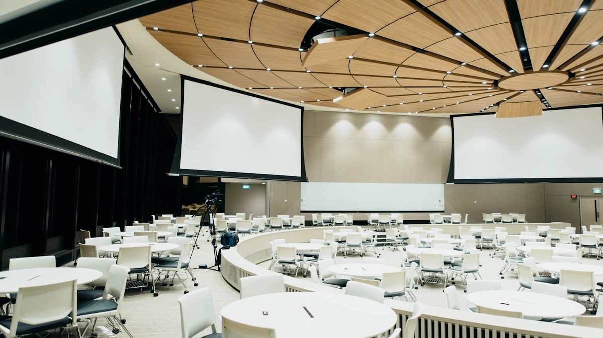

🏛️ कक्षा 10 राजनीति विज्ञान (लोकतांत्रिक राजनीति-2)
अध्याय 1: सत्ता की साझेदारी (Power Sharing) | मास्टर नोट्स
लोकतंत्र का सबसे मूलभूत सिद्धांत यह है कि जनता ही समस्त राजनीतिक शक्ति का स्रोत है। लोकतंत्र में लोग स्वशासन की संस्थाओं के माध्यम से अपना शासन खुद चलाते हैं। एक अच्छे लोकतांत्रिक शासन में समाज के विभिन्न समूहों और उनके विचारों को उचित सम्मान दिया जाता है। सत्ता की साझेदारी का अर्थ है—सरकार के विभिन्न अंगों, स्तरों और सामाजिक समूहों के बीच शक्ति का न्यायपूर्ण व लोकतांत्रिक बंटवारा करना।

बेल्जियम यूरोप का एक बहुत छोटा सा देश है, जिसकी क्षेत्रफल में तुलना हमारे हरियाणा राज्य से की जा सकती है। इसकी सीमाएं फ्रांस, नीदरलैंड, जर्मनी और लक्समबर्ग से लगती हैं। इसकी कुल आबादी लगभग 1.1 करोड़ है। देश की कुल आबादी का 59% हिस्सा फलेमिश (Flemish) क्षेत्र में रहता है और डच भाषा बोलता है। दूसरा हिस्सा 40% वेलोनिया (Wallonia) क्षेत्र में रहता है और फ्रेंच भाषा बोलता है। शेष 1% लोग जर्मन बोलते हैं।
🏛️ राजधानी ब्रुसेल्स (Brussels) की विशेष जटिलता:
- ब्रुसेल्स में उल्टा समीकरण: जहाँ पूरे देश में डच भाषी लोग बहुसंख्यक (59%) थे, वहीं राजधानी ब्रुसेल्स में 80% लोग फ्रेंच भाषी थे और केवल 20% लोग डच भाषी थे।
- आर्थिक विषमता: अल्पसंख्यक फ्रेंच भाषी लोग तुलनात्मक रूप से अधिक समृद्ध, शक्तिशाली और शिक्षित थे। डच भाषी लोगों को आर्थिक विकास और शिक्षा का लाभ बहुत बाद में मिला।
- 1950 और 1960 का तनाव: इस आर्थिक और भाषाई असमानता के कारण डच और फ्रेंच भाषी समूहों के बीच 1950-60 के दशक में गंभीर तनाव पैदा हो गया।

श्रीलंका भारत के दक्षिण तट से कुछ किलोमीटर की दूरी पर स्थित एक द्वीपीय देश है, जिसकी आबादी लगभग 2 करोड़ (हरियाणा के बराबर) है। श्रीलंका की आबादी में भी कई सामाजिक समूह हैं। सबसे बड़ा सामाजिक समूह सिंहलियों का है जिनकी कुल आबादी में हिस्सेदारी 74% है। दूसरा बड़ा समूह तमिलों का है जिनकी आबादी 18% है।
| सामाजिक / भाषाई समूह | जनसंख्या प्रतिशत | धार्मिक स्थिति एवं मुख्य विशेषताएं |
|---|---|---|
| सिंहली भाषी (Sinhala) | 74% | मुख्यतः बौद्ध धर्मानुयायी, देश के बहुसंख्यक वर्ग। | श्रीलंकाई तमिल (Sri Lankan Tamils) | 13% | उत्तर और पूर्वी प्रांतों में बसे मूल निवासी (हिंदू व मुस्लिम)। |
| भारतीय तमिल (Indian Tamils) | 05% | औपनिवेशिक काल में बागानों में काम करने भारत से लाए गए मजदूरों के वंशज। |
| ईसाई (Christians) | 07% | सिंहली और तमिल दोनों भाषाएं बोलने वाला मिश्रित समुदाय। |
🔥 1956 का बहुसंख्यकवादी कानून और उसके परिणाम:
1948 में श्रीलंका स्वतंत्र राष्ट्र बना। सिंहली समुदाय के नेताओं ने अपनी बहुसंख्या के बल पर शासन पर प्रभुत्व जमाना चाहा। इसके तहत 1956 में एक कानून बनाया गया:
- सिंहली एकमात्र आधिकारिक भाषा: तमिल भाषा की उपेक्षा करके सिंहली को एकमात्र राजभाषा घोषित किया गया।
- नौकरियों व शिक्षा में प्राथमिकता: विश्वविद्यालयों और सरकारी नौकरियों में सिंहली आवेदकों को प्राथमिकता देने की नीति चली।
- बौद्ध धर्म को राजकीय संरक्षण: नए संविधान में यह प्रावधान किया गया कि सरकार बौद्ध मत को संरक्षण और बढ़ावा देगी।

बेल्जियम के नेताओं ने श्रीलंका से अलग रास्ता अपनाया। उन्होंने समझदारी दिखाते हुए क्षेत्रीय अंतरों और सांस्कृतिक विविधताओं को स्वीकार किया। 1970 और 1993 के बीच उन्होंने अपने संविधान में 4 बार संशोधन किए ताकि देश में रहने वाले सभी लोग मिल-जुलकर रह सकें।

सत्ता की साझेदारी के पक्ष में दो मुख्य प्रकार के तर्क (Reasons) दिए जाते हैं, जो लोकतंत्र की सफलता के लिए अत्यंत महत्वपूर्ण हैं:

| तर्क का प्रकार | मूल आधार एवं सिद्धांत | मुख्य उद्देश्य व लाभ |
|---|---|---|
| 1. युक्तिपरक तर्क (Prudential Reason) | लाभ-हानि का सावधानीपूर्वक हिसाब लगाकर लिया गया निर्णय। | विभिन्न सामाजिक समूहों के बीच टकराव और हिंसा को रोकना, राजनीतिक स्थिरता स्थापित करना। |
| 2. नैतिक तर्क (Moral Reason) | लोकतंत्र के अंतर्निहित मूल्यों और आत्मा पर आधारित। | जनता की शासन में प्रत्यक्ष भागीदारी सुनिश्चित करना; सत्ता का बंटवारा अपने आप में कीमती है। |
आधुनिक लोकतांत्रिक व्यवस्थाओं में सत्ता की साझेदारी कई रूपों में हो सकती है। इसे निम्नलिखित 4 मुख्य श्रेणियों में विभाजित किया गया है:



💡 परीक्षा हेतु त्वरित स्मरणीय तथ्य (Quick Exam Takeaways):
- बेल्जियम की आबादी: 59% डच (फलेमिश), 40% फ्रेंच (वेलोनिया), 1% जर्मन।
- ब्रुसेल्स की आबादी: 80% फ्रेंच, 20% डच।
- श्रीलंका की आबादी: 74% सिंहली (बौद्ध), 18% तमिल (13% मूल तमिल, 5% भारतीय तमिल)।
- 1956 का श्रीलंका कानून: सिंहली को एकमात्र राजभाषा बनाया, बौद्ध धर्म को संरक्षण दिया।
- बेल्जियम संविधान संशोधन: 1970 से 1993 के बीच 4 बार संशोधन किए गए।
- सामुदायिक सरकार (Community Govt): संस्कृति, भाषा और शिक्षा संबंधी फैसले लेने की विशेष संस्था।
- क्षैतिज वितरण (Horizontal): विधायिका, कार्यपालिका, न्यायपालिका (नियंत्रण और संतुलन प्रणाली)।
- ऊर्ध्वाधर वितरण (Vertical): केंद्र सरकार, राज्य सरकार, स्थानीय स्वशासन (संघात्मक व्यवस्था)।